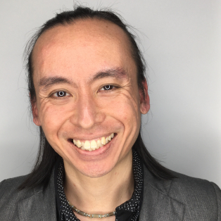

DAVID GOY MIN TAT (倪明达)
Full Stack Web Developer
BEng(Hons), DipIT(Distinction), DipEng(Merit)
Development Stack
- Operating system: Linux
- Front-end: JavaScript, HTML, CSS
- Back-end: PHP, MySQL
- Frameworks: Bootstrap, CodeIgniter
- HTTP API: REST
- Web server: Apache HTTP Server
- Shell scripting: Bash, PowerShell
- Version control: Git
Projects
-
Reflect
https://github.com/davidgoy/reflect
Static site generator for WordPress.
Awards
-
US patent 8612100 for invention of vehicle management control system (2013)
- Enables an entire vehicle to be controlled by a single software framework running on macOS, Linux or Windows computer
- Invented during time as a PhD research student at The University of Sydney
-
The NEC Semiconductors Singapore Pte. Ltd. Award for Best Project Work (2000)
- Software written in C that enabled engineers to simulate the dynamic performance of micromouse robot without having to build a physical prototype
- Created during time as a Diploma in Mechatronics Engineering student at Nanyang Polytechnic, Singapore
Businesses
-
Full Stack Web Developer (2011 - Now)
Self-employed
Specialising in the development of complex web applications using LAMP stack (Linux, Apache, MySQL, PHP) and JavaScript. -
Founder (2006 - 2013)
Goy Advanced Automobile
Australian electric vehicle startup. Joined by more than 10 Australian and international team members. The startup did not succeed. However:- Successfully raised first round of funds to pay for consultation with Lotus Engineering
- Vehicle designed by team was featured in Top Gear Australia magazine, Auto Salon magazine, Sydney Morning Herald newspaper and The Age (Melbourne) newspaper
Employment
-
Technical Delivery and Support - Applications (2018 - Now)
States of Guernsey (then later transferred to Agilisys Guernsey)
Supported the applications used by various departments of the States of Guernsey (Policy & Resources, Economic Development, Employment & Social Security, Environment & Infrastructure, Health & Social Care and Home Affairs).
Including Microsoft 365 applications, Windows Server, SQL Server and Active Directory. -
Manufacturing Engineer (2004 - 2007)
Silverbrook Research Pty. Ltd., Australia
Researched and implemented mass production methods that could be potentially used to manufacture an ultra-high speed printhead developed by the company.
- Developed a solution to clean one of the key components that improved the part's yield from approx. 50% to nearly 100% at the cleaning stage of the manufacturing process
- Improvised a solution to remove unwanted residue from a key component's coating, increasing yield from approx. 8% to 90% at an important stage of the manufacturing process and resulting in significant time and cost savings
-
Associate Engineer (2000 - 2001)
Chartered Semiconductor Manufacturing Ltd., Singapore
Lithography/process department
Troubleshoot process and machine related issues in the production line, performed quality checks on silicon wafers and develop strategies to minimise defects/increase manufacturing yield.- Successfully implemented new program criteria for automatic defect detection, significantly reducing errors/false alarms and thus production down time by approx. one hour per day
IPM layout/test structure department
Drafted semiconductor structures using CAD tool for new test module designs.- Developed software that automated the drafting of semiconductor structures, enabling the department to produce a month's worth of component design drawings in less than five hours
Education
-
Doctor of Philosophy (Engineering and IT) by Research - Withdrawn
The University of Sydney, Australia
Conducted research on software system that will allow an entire vehicle to be controlled by a single CPU as opposed to the conventional method that requires a multitude of CPUs. Withdrawn from PhD program in 2013 to focus on business. -
Bachelor of Engineering (Materials and Mechanical Systems) with Honours (2004)
The Australian National University, Australia- Faculty of Engineering and IT Student Services First Year International Scholarship (2002)
-
Diploma in Information Technology (Website Development) With Distinction (2011)
TAFE NSW, Australia- 26 distinctions
-
Diploma in Engineering (Mechatronics) with Merit (2000)
Nanyang Polytechnic, Singapore- 15 distinctions
- Top 10% of the graduating cohort for the diploma course
- Sponsorship under Chartered Semiconductor Manufacturing Ltd. (1999 – 2000)
- Top Student Award, Mechatronics Engineering (1999/2000)
- Top Student Award, Mechatronics Engineering (1998/1999)